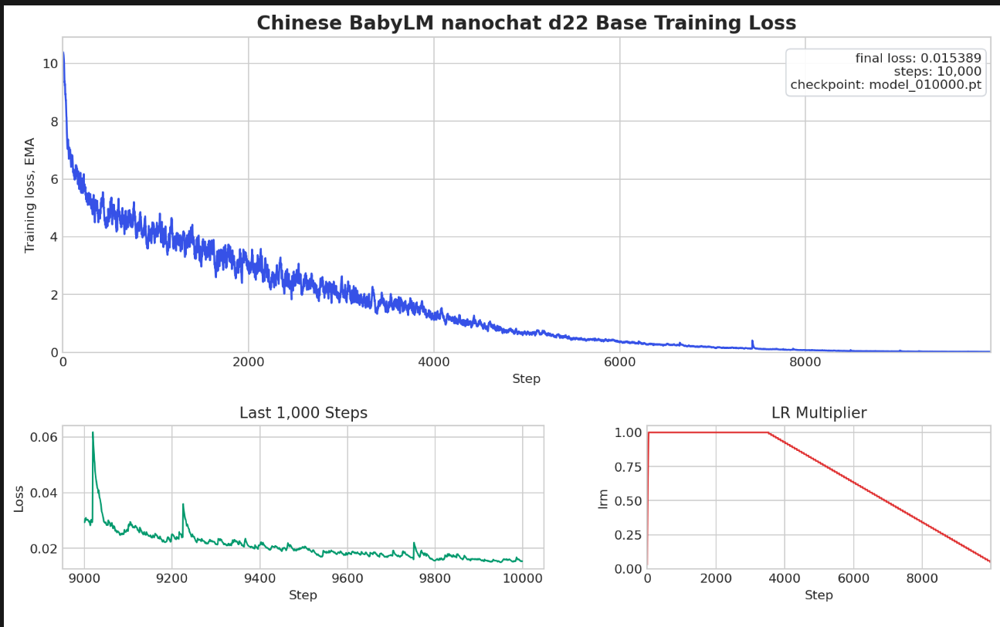

flowchart TB raw["中文 BabyLM 原始语料"] --> clean["清洗 / 去噪 / 切分"] clean --> tok["Tokenizer training<br/>32K Chinese BPE"] tok --> comp["Compression eval<br/>train / val bytes per token"] tok --> shards["Pretrain shards<br/>parquet 训练分片"] shards --> train["Base pretraining<br/>small decoder-only"] train --> ckpt["checkpoint pool"] ckpt --> probe["representation probing<br/>layers 4/8/12/16/20"] ckpt --> eval["official + downstream eval"] probe --> select["layer / checkpoint selection"] eval --> select select --> report["training report / analysis"] report --> feedback["data / schedule / eval feedback"] feedback --> clean
NanoChat-zh-d22 中文 BabyLM
中文 BabyLM 小型基座模型：自训 tokenizer、从零预训练、表示层选择与官方评测闭环。
BabyLM Base Model
NanoChat-zh-d22 中文 BabyLM
面向受限中文语料的 BabyLM 目标，先判断 tokenizer 是否真正贴合中文分布，再决定预训练、表示层选择和评测怎么展开。这里的主线不是“训一个小模型”，而是让固定上下文窗口尽可能装进更多中文有效信息。
Tokenizer Compression
4.98
训练语料上的 bytes/token，显著优于通用 tokenizer。
Validation Compression
4.81
验证语料上的 bytes/token，说明泛化仍然保持较好。
Vocab Size
32768
和 BabyLM 目标对齐的中文 BPE 词表规模。
Tokenizer Train
176.31s
在有限数据与约束下完成 tokenizer 训练。
00 执行摘要
中文优先
tokenizer 和预训练语料都围绕中文分布设计，而不是直接沿用通用英文 tokenizer 的切分方式。
小模型可训
模型规模、序列长度、batch 和精度都按双卡 5090 的现实资源做保守配置。
闭环可证
从 tokenizer compression 到 base loss，再到 representation probing 和官方评测，全部纳入同一条选择链。
技术主线
先看信息密度
BabyLM 的第一个判断不是参数量，而是中文字符和词片是否被 tokenizer 压缩成足够高的信息密度。压缩率好，后面的训练窗口才有意义。
再看模型是否稳
小型 decoder-only 基座要先证明在有限语料和双卡资源里能稳定收敛，loss 曲线和 checkpoint 轨迹比单次指标更重要。
最后看值不值得继续
表示层选择和官方评测不是附加项，而是决定这条路线是否能往后训练、下游任务和解释性分析继续延伸的收口。
这条路为什么成立
中文 tokenizer 的压缩收益不是抽象概念，它直接把固定上下文窗口的有效容量放大了。对于 BabyLM 这种受限训练任务，这意味着同样的算力和步数，可以把更多中文语料完整送进模型，而不是被切碎成低密度 token。
最后怎么判断值不值得继续
不是看训练集是否更像“背下来”了，而是看验证压缩、下游中文任务、表示层 probing 和 loss 曲线能否同时成立。如果这四件事不能同时过线，说明方向还没真站稳。
01 背景与约束
真正的分歧点不是“模型要多大”，而是中文 token 是否被压得足够密、足够稳，从而让有限上下文真正装下有效信息。硬件和语料的约束只是外壳，真正决定方案的是信息密度与可训练性。
| 约束 | 实际含义 | 设计结果 |
|---|---|---|
| 中文 BabyLM 语料上限 | 总 token 规模受限，不能靠大规模堆数据取胜。 | 优先做 tokenizer 贴合与训练流程稳定性。 |
| 文档 cap | 单文档过长会拉高噪声与训练抖动。 | 以文档切分和分片训练控制长度分布。 |
| 硬件约束 | 双卡 5090，32GB 级显存。 | 采用 BF16、分布式训练和保守 batch 设置。 |
| 目标约束 | 既要中文压缩好，也要保留英文/代码等通用能力底线。 | 接受任务专门化，但不把 tokenizer 做成纯单场景过拟合。 |
数据组织
预训练数据整理为可直接迭代的分片，验证集放在固定末尾分片，保持训练与评测一致的读取路径，减少 dataloader 改动。
评估目标
tokenizer 先看压缩率，base model 再看 loss 和最终 Chinese eval，避免只用某一个局部指标做决策。
02 总体架构
Corpus中文语料
Tokenizer32K BPE
Shardsparquet 分片
Pretraindecoder-only
Probe表示层扫描
Eval官方/下游任务
Selectcheckpoint 决策
训练与评测架构图
基础模型
小型 decoder-only 基座围绕中文任务设计，训练过程保留清晰的 checkpoint 轨迹，方便比较不同阶段的 loss、生成质量和下游表现。
精度与并行
双卡分布式训练采用 BF16 作为默认精度，在当前硬件上优先走稳定的注意力实现，而不是为追求边缘优化引入额外风险。
03 Tokenizer 设计
| 对比项 | 训练集 | 验证集 |
|---|---|---|
| GPT-2 tokenizer | 17,057,557 tokens / 1.43 BPT | 1,445,873 tokens / 1.44 BPT |
| GPT-4 tokenizer | 11,097,674 tokens / 2.20 BPT | 947,200 tokens / 2.19 BPT |
| Our tokenizer | 4,901,856 tokens / 4.98 BPT | 432,486 tokens / 4.81 BPT |
Round Trip
两个中文样例都满足 encode / decode 完整回环，说明 tokenizer 在中文输入上没有把字符级信息切坏。
结论
这个 tokenizer 的目标不是做全场景通用压缩，而是尽量让中文 BabyLM 训练窗口装进更多中文有效信息。
为什么不能只看压缩率
bytes/token 高说明上下文窗口更省，但也可能把低频词、数字、英文和代码切得更粗。我的判断方式是把 train / val 压缩、round-trip、跨域样例和后续 BPB 放在一起看，避免把 tokenizer 做成只会吃训练集的捷径。
它改变了后面的训练问题
在中文语料里，同样 1024 token 的窗口可以覆盖更长的句子和更完整的段落，这会改变模型看到的依赖长度。后续 pretrain 不再只是“同样数据换个 tokenizer”，而是重新定义了每一步梯度里包含的中文信息量。
04 基座预训练
训练判断
从零训练小型 decoder-only 模型，控制序列长度和 batch，在有限算力下优先保证 loss 可下降、训练可收敛。
硬件现实
双卡 5090 场景下，BF16 和分布式并行是默认选择，重点是稳定而不是追逐极限吞吐。
曲线意味着什么
训练损失先快速下降，再进入缓慢收敛区间，说明 tokenizer 和数据组织没有把模型拖进持续震荡。

训练中真正看的信号
我更关注曲线是否出现长期震荡、突然发散、后段学习率下降后是否还能继续降低，以及 checkpoint 之间的生成质量是否同步改善。这样可以把“训练跑完了”和“训练真的有效”区分开。
下一轮会怎么改
如果验证 BPB 和中文评测没有跟上，优先检查数据分片分布、重复样本、学习率节奏和 tokenizer 的低频覆盖，而不是直接增大模型深度。小模型项目最怕的不是参数不够，而是把错误归因到模型规模。
05 表示层选择
| 扫描层 | 目的 | 判断方式 |
|---|---|---|
| 第 4 层 | 看早期语义和局部词法信息。 | 对比神经拟合任务和轻量下游任务表现。 |
| 第 8 层 | 看中间层表征是否更稳。 | 检查任务区分度和噪声敏感性。 |
| 第 12 层 | 看语义和结构的平衡点。 | 比较 representation 质量与泛化。 |
| 第 16 / 20 层 | 看高层表征是否已经开始任务化。 | 用于寻找更适合目标任务的 checkpoint layer。 |
选择逻辑
表示层不是固定“越深越好”，而是看哪个层在目标任务上最有信息密度、最适合外部读取。
结论形式
最后不会只保留一个“最好层”，而是保留一组可复用的 checkpoint / layer 组合，供后续研究和报告复现。
06 评测闭环
CompressionTokenizer
LossBase pretrain
Probe表示层
Bench中文评测
Comparecheckpoint 对比
Select候选模型
Report复盘归档
| 评测维度 | 作用 | 对应闭环动作 |
|---|---|---|
| Tokenizer compression | 决定同一上下文窗口里能装下多少中文。 | 先做分词器取舍。 |
| Validation loss / BPB | 衡量基座模型是否真的学到了分布。 | 决定是否继续训练或调整 schedule。 |
| Chinese downstream eval | 看模型在中文任务上的综合能力。 | 比较不同 checkpoint 的实用价值。 |
| Representation probing | 看哪一层最适合目标任务读取。 | 输出层选择建议和后续实验方向。 |
官方/下游任务
把中文 NLU、汉字结构、拼音、语言知识等评测放进统一对比框架里，避免只拿一个任务代表整体模型质量。
决策原则
tokenizer 结果只负责“是不是值得继续训”，base loss 只负责“训得稳不稳”，最终还要靠下游评测和表示层分析做定夺。
07 闭环与风险
中文专门化过强
Tradeoff
中文压缩变好后，通用语言和跨域样例会变弱一些。这个损失是可接受的，因为当前目标是中文 BabyLM 基座，而不是全能助手。
只看训练 loss
Evaluation Risk
训练损失下降不代表下游一定更好，所以必须把 tokenizer compression、validation loss、representation probing 和中文任务评测一起看。
层选择不稳定
Probe Risk
不同任务对表示层偏好不同，不能把一个层的结果当成永远成立的结论。更稳妥的做法是保留候选层并记录任务适配理由。
数据偏移
Data Risk
如果训练分布和评测分布拉得太开，tokenizer 优势会被模型层面的偏差抵消。后续需要继续检查语料质量和分片分布。